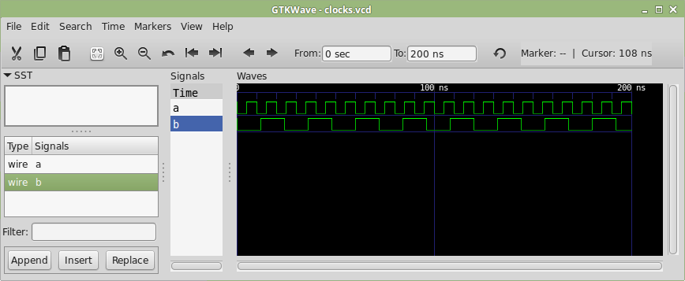

A SystemC egy szimulációs keretrendszer, amelyben digitális rendszerek modellezhetők, és a működésük eseményvezérelt alapon szimulálható. A SystemC-ben az egyes részrendszereinket (legyenek azok egyszerű kapuk vagy összetett processzorok) C++-ban írhatjuk le. Az így kapott kódot a szimulációs motorral, ún. szimulációs kernellel együtt lefordítva egy futtatható programot kapunk, amely elvégzi a szimulációt.
Az alábbi kódrészletek jellegzetes SystemC modulokat mutatnak. A bal oldali egy 10 ns periódusidejű órajelgenerátor, a jobb oldali pedig egy 3 ns kapukésleltetési idejű inverter.
class ClkGen: public sc_module {
sc_out<bool> output;
void clk();
/* ... */
};
void ClkGen::clk() {
while (true) {
wait(5, SC_NS);
output.write(true);
wait(5, SC_NS);
output.write(false);
}
}class Inverter: public sc_module {
sc_in<bool> input;
sc_out<bool> output;
void invert();
/* ... */
};
void Inverter::invert() {
while (true) {
wait();
wait(3, SC_NS);
output.write(!input.read());
}
}Az órajelgenerátor működése egyszerű. 5 ns várakozás után a kimenetét 1-be állítja, aztán újabb 5 ns várakozás után
0-ba, és ez folytatódik a végtelenségig. Az inverter is végtelen ciklust tartalmaz. Az üres paraméterű
wait() megvárja, hogy az inverter bemenete megváltozzon. A következő sor még vár 3 ns-ot (ez a kapukésleltetési
idő), végül a kimenet beállítása után újra várakozni kezd a bemenet újabb megváltozására. Az inverter input nevű bemenetét egy itt nem
szereplő, az inverter konstruktorában lévő kódrészlet teszi az invert() függvény érzékenységi listájára, ami
alapján a szimulációs kernel tudja, hogy a várakozást ezen bemenet megváltozásának hatására kell befejezni.
Bár a fenti függvények működése magától értetődik, a C++ szempontjából egyáltalán nem azok. Mindkét függvény végtelen
ciklust tartalmaz, tehát ha egyszer meghívják őket, akkor soha nem térnek vissza. De vajon működhet ez másképp? Az inverter
szimulációja nem működhet úgy, hogy a szimulációs kernel a bemenet megváltozása után meghívja az invert()
függvényt, az pedig dolga végeztével visszaadja a vezérlést a szimulációs kernelnek. Mi történne akkor, ha a szimuláció
következő 3 ns időtartamában más is történik? Az sem lehet, hogy a hívási lánc fordítva működik, hogy az inverter indítja el a
szimulációt a wait() hívással: nem csak egy inverterünk lehet a modellben. Ha ezek mind egymást hívnák, előbb-utóbb
megtelne a verem a vissza nem térő függvények miatt.
Az órajelgenerátor működése még érdekesebb. Ennél az órajel állapotát (épp 1 vagy 0 a kimenet) nem egy változó, hanem a program végrehajtása közbeni aktuális sor tárolja. Ha épp a második sornál tart a végrehajtás, 1 lesz a kimenet, ha a negyediknél, akkor nulla. Ebből a függvényből nem is szabad visszatérni, hiszen ha ezt a függvényt újra meg kellene hívni, akkor újra kellene kezdeni a függvénytörzs végrehajtását, az első sorától.
Ha meg akarjuk oldani, hogy a függvények végtelen ciklusok legyenek, hogy soha ne térjenek vissza, ahhoz C++-ban szálkezelést kell használnunk.
Continuation, coroutine
Vannak programozási nyelvek, amelyekben el lehet menteni változóba, hogy éppen hol tart a program végrehajtása (milyen hívási láncolaton keresztül jutottunk az adott helyre, hányadik sorban vagyunk éppen) – ez az ún. continuation. Léteznek olyan nyelvek is, amelyekben lehetséges ún. korutinokat (coroutine) létrehozni, amelyek meg tudják szakítani a saját működésüket, átadva a vezérlést másnak – hogy aztán később ugyanott folytatódjon a kód végrehajtása, ahol abbamaradt (így kooperatív multitaszk valósítható meg).
A 2020-as szabványtól kezdve korutinok létrehozására a C++ is képes. Az itt vázolt feladat azzal az eszközzel is megoldható lenne.
A mostani összetett példánk egy ehhez hasonló működésű program lesz. Nem egy teljes értékű digitális szimulátorról van szó, hanem csak egy leegyszerűsített változatról, amelyben csak két órajelgenerátor működik majd eltérő periódusidővel. Az órajelgenerátor modulok forráskódja azonban a fentihez hasonló lesz, végtelen ciklust és várakozásokat tartalmazó függvény. A kimeneti fájl VCD (value change dump) formátumú lesz, amelyet a digitális áramkörök szimulátorai elterjedten használnak.
A szimulátorban összesen három szál fog futni. Az első a szimulációs kernel, ez egyben maga a főprogram is. A másik két szál
pedig a két órajelgenerátor modulhoz tartozik. A működés tehát a szálak elalvásán, felébredésén, és egymást értesítésén fog
alapulni. Egyszerre mindig csak egy modul, azaz egy szál lesz aktív. Amikor egy modul elalszik a wait() hatására,
akkor átadja majd a vezérlést a szimulációs kernelnek. A szimulációs kernel ekkor megkeresi, hogy melyik a soron következő modul,
és felébreszti azt; miközben önmaga elalszik, hogy várjon, amíg a modul elvégzi a dolgát. Ahogy ez megtörtént, a modul
felébreszti a szimulációs kernelt, és így tovább. A program egyébként így csak
egy processzormagon fog futni, hiába többszálú. De nem a gyors végrehajtás miatt indítunk most szálakat, hanem hogy a programbeli
állapotukat meg tudjuk őrizni: ki hol tart a saját végtelen ciklusában.
A programban megadott idők (az órajel frekvenciája) nem keverendők össze a valós idővel! Lesz belül egy szimulált idő. Az időpontot ns egységekben mérjük, az események pedig diszkrét időben, egész ns-kor történnek. A szimulációs kernel a történő eseményeket a jövőbeli bekövetkezés ideje szerint rögzíti, és ütemezi azok végrehajtását. Mindig azt a modult ébreszti majd föl, amelyhez a legközelebbi esemény van ütemezve. Amikor egy modul elalszik egy jelzett időre, a kernel egy várakozási sorba teszi majd az ehhez tartozó felébredési eseményt. A várakozási sor tehát egy prioritásos sor, idő szerint növekvő sorrendbe rendezve, legelöl a leghamarabbi eseménnyel.
A szimuláció futását a szimulációs kernel (Kernel osztály) vezérli, a várakozási sorba betett és onnan kivett események alapján. Minden eseményhez (Event) egy modul tartozik (Module), amelyet az adott eseménynél
fel kell ébreszteni.
adatszerkeszete
class Kernel {
int sim_time = 0;
struct Event {
int sim_time;
Module* module;
bool operator< (Event const& e) const {
return this->sim_time > e.sim_time;
}
};
std::priority_queue<Event> events;
};Az std::priority_queue magától sorbarendezi az eseményeket, így mindig elég csak a legfölső eseményt kivenni a
várakozási sorból. Mivel azelőtt esemény már nem történt, a szimulációs időt annak az eseménynek a bekövetkezési idejére lehet
állítani, aztán pedig fölébreszteni az adott modult – átadni neki a vezérlést. Innentől kezdve a modul fog dolgozni, egészen addig,
amíg el nem végezte az összes dolgát:
kezelése
void Kernel::simulate(int interval) {
int stop = sim_time + interval;
while (sim_time < stop && !events.empty()) {
Event current_event = events.top();
events.pop();
sim_time = current_event.sim_time;
yield_to(*current_event.module);
}
}Az egyszerűsített programban a modulok adott ideig tudnak várakozni. A várakozás azt jelenti, hogy a szimulációs kernel számára jelezni kell a jövőbeli időpontot, amikor a modult újra fel kell ébreszteni. Ezután a kernel visszakapja a vezérlést:
alvása
void Module::wait(int interval) {
Kernel::instance().schedule_event(interval, *this);
yield_to(Kernel::instance());
}ütemezése
void Kernel::schedule_event(int interval, Module& module) {
events.push(Event{sim_time+interval, &module});
}Egyke (singleton) tervezési minta a C++-ban
A programban a szimulációs kernel egyébként egy egyke (singleton). Az egyke tervezési mintát C++-ban privát konstruktorral,
statikus instance() tagfüggvénnyel és egy statikus lokális változóval lehet legegyszerűbben megvalósítani.
A kernel egyetlen példánya akkor jön létre, amikor a vezérlés először áthalad a statikus lokális változó definícióján, vagyis
a instance() függvény első hívásakor:
class Kernel {
private:
Kernel() = default;
Kernel(Kernel const&) = delete;
public:
static Kernel& instance() {
static Kernel instance;
return instance;
}
};Az eddigi kódrészletekből látható, hogy mind a kernel, mind a modulok elaltathatók, felébreszthetők. Ezt a tulajdonságot
legjobb egy külön osztályban megvalósítani (Synchronizable), hogy mindkét osztály örökölhesse. Mivel az egyes szálak
egymást fogják felébreszteni, szükségünk van egy condition_variable-re; annak használatához egy mutex-re,
illetve a spontán felébredés elkerüléséhez egy egyszerű bool típusú változóra.
class Synchronizable {
private:
std::mutex mtx;
std::condition_variable cv;
bool run = false;
public:
void sleep() {
std::unique_lock<std::mutex> lock{mtx};
cv.wait(lock, [=] { return run; });
run = false;
}
void wakeup() {
std::unique_lock<std::mutex> lock{mtx};
run = true;
cv.notify_one();
}
void yield_to(Synchronizable& other) {
other.wakeup();
this->sleep();
}
};
class Module: public Synchronizable {
/* ... */
};
class Kernel: public Synchronizable {
/* ... */
}A szimuláció indulásakor a kernelnek meg kell mutatni a modulokat. A kernel ilyenkor nem tárolja el azok adatait
ebben az egyszerű példában, viszont minden egyes modulhoz tartoznia kell egy szálnak, amelyik aludni és dolgozni fog
a megfelelő időpillanatokban. A szálak alvó állapotban kell kezdjék az életüket, hogy a kernel tudja vezérelni az első
felébredésüket is. Vagyis minden modul tulajdonképp egy this->sleep()-pel kell induljon. Ezt OOP tervezésben
egy függvénysablonnal oldanánk meg, de még egyszerűbb a dolgunk, ha a kernel a szálként egy olyan lambda függvényt indít
el egy alvással kezd:
/* szál indítása az adott modulhoz */
void Kernel::register_module(Module& module) {
std::thread t{[&] {
module.sleep();
module.do_stuff();
}};
t.detach();
schedule_event(0, module);
}A keretrendszer tulajdonképpen ennyi. Az összes modult a fenti Module ősosztályból kell származtatni.
Feltéve, hogy a logger objektum írja a fájlba a szimulációs eredményt, egy órajelgenerátor kódja:
class Clock: public Module {
private:
char wire; /* órajelgenerátor neve */
int interval; /* jelváltások közötti idő, ns */
public:
Clock(char wire, int interval): wire(wire), interval(interval) {
logger.new_wire(wire);
Kernel::instance().register_module(*this);
}
void do_stuff() override {
while (true) {
logger.value_change(wire, 0);
wait(interval);
logger.value_change(wire, 1);
wait(interval);
}
}
};A szimulációban két órajelgenerátort hozunk létre, eltérő periódussal, és ezeket szimuláljuk 200 ns ideig:
int main() {
Clock a{'a', 5};
Clock b{'b', 12};
Kernel::instance().simulate(200);
}Így keletkezik a VCD fájl, amelyik a jelváltásokat mutatja.
$var wire 1 a a $end $var wire 1 b b $end #0 0a #0 0b #5 1a #10 0a #12 1b #15 1a [...]
- GTKWave hullámforma nézegető: http://gtkwave.sourceforge.net/.
- C++ Extensions for Coroutines.